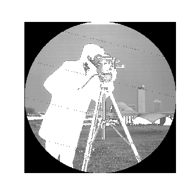

This script illustrates how to use basic NumPy operations, such as slicing, masking and fancy indexing, in order to modify the pixel values of an image.

import numpy as np
from skimage import data
import matplotlib.pyplot as plt
camera = data.camera()
camera[:10] = 0
mask = camera < 87
camera[mask] = 255
inds_x = np.arange(len(camera))
inds_y = (4 * inds_x) % len(camera)
camera[inds_x, inds_y] = 0
l_x, l_y = camera.shape[0], camera.shape[1]
X, Y = np.ogrid[:l_x, :l_y]
outer_disk_mask = (X - l_x / 2)**2 + (Y - l_y / 2)**2 > (l_x / 2)**2
camera[outer_disk_mask] = 0
plt.figure(figsize=(4, 4))
plt.imshow(camera, cmap='gray', interpolation='nearest')
plt.axis('off')
plt.show()
Python source code: download
(generated using skimage 0.12.2)
IPython Notebook: download
(generated using skimage 0.12.2)
 Source
Source